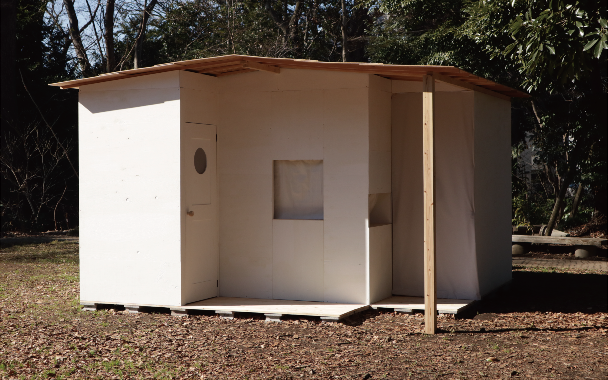
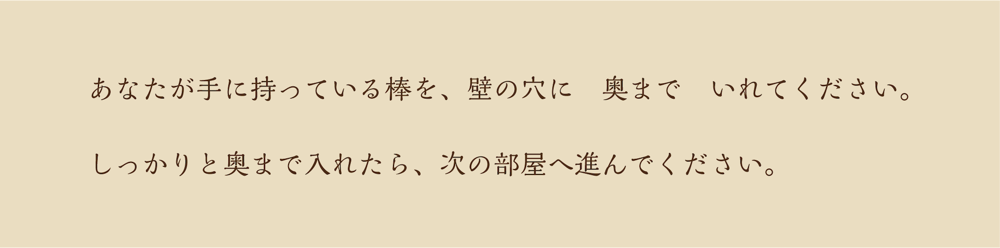
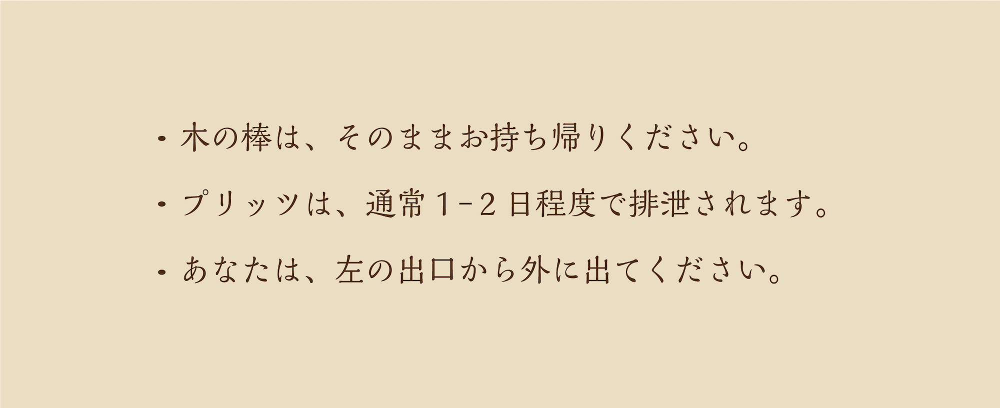
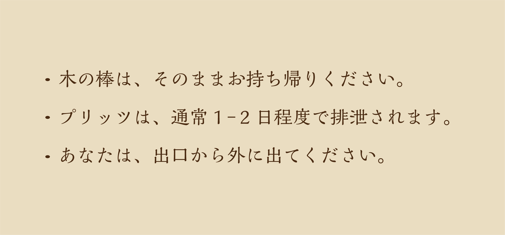

お持ち帰りください。
入口で小さな木の棒を受け取って小屋の中に入る





書かれた指示に従って、壁の穴に棒をいれる
ぐにっとした感触を指先に感じながら棒を押し込んで、次の部屋に進む
ぐにっとした感触を指先に感じながら
棒を押し込んで、次の部屋に進む


前の部屋で穴に押し込んだ棒が壁から突き出ている
その前には小さな机と皿が用意されており、また指示が書かれている
その前には小さな机と皿が用意されており、
また指示が書かれている

棒を見上げ、同じ形の菓子を食べる
指の感触に加え、唇にもその形を感じる

次の部屋に進む
出口の手前に最後の指示が書かれている




concept
持ち帰るように指示される 3 つの棒〈木の棒・プリッツ・身体〉はそれぞれ筒〈壁の穴・身体・小屋〉と対応している。
これらの対応関係は小屋を出た自分と排泄物との構造的な類似を示し、実際に指や唇や体を使って体験をするこ とで、後味の悪いおとぎ話のような感触を鑑賞者(の胃)に(物理的に)残す。
狐につままれたような体験は「食べることによる物質的な変容」と「鑑賞による精神的な変容」をもたらし、体験者は自身の連続性に疑問を投げかけられる。